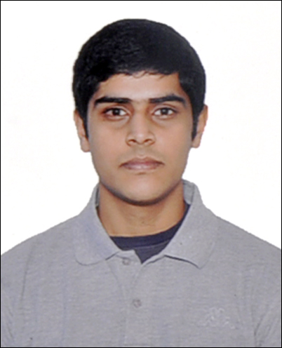
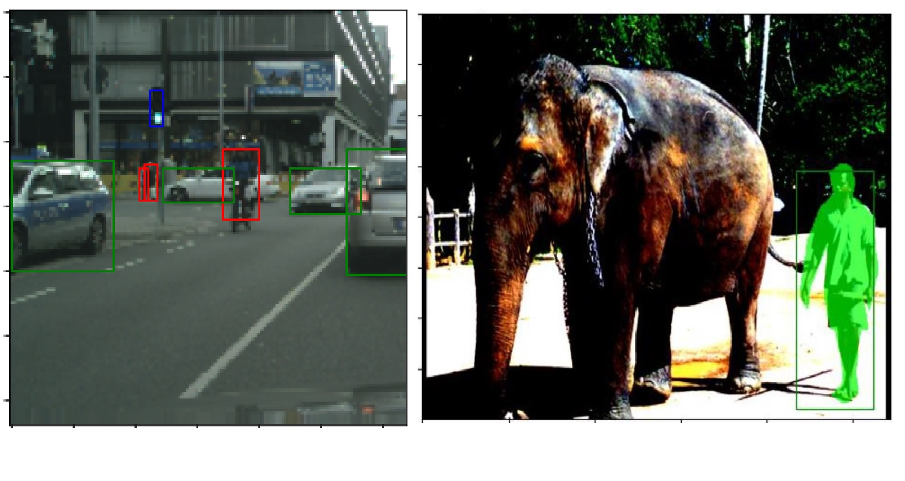

|
I am a Robotics Master's student at UPenn (University of Pennsylvania) in Philadelphia, where I work on Computer Vision, Perception, SLAM, Deep learning and Planning. Feel free to take a look at my Resume and drop me an e-mail if you want to connect with me. |
 |
{kind=link}
|
|
|

|
2022
In this project, different Object Detection and Image Segmentation algorithms were explored and implemented from scratch. The algorithms include YOLO, SOLO and Faster R-CNN with Mask R-CNN.
|

|
2022 FreeDAS ADAS Tracking with DeepSORT
FreeDAS is an open-source project developed for our Computer Vision & Computational Photography course as a final project. The goal of this project is to enable old vehicles with no access to driver assist functionalities with a vision-based driver assist system using webcam footage. This is now an initial proof of concept and the above features have been implemented, with special techniques to enable faster computation.
|

|
2022 Code: UKF
In this project, we implemented an Unscented Kalman filter to track three dimensional orientation. |

|
2021 Video
The Pick and Place challenge is to stack static and dynamic blocks by a 7DOF Franka Panda Arm using ROS and Python.
Our team won the Pick and Place knockout challenge at UPenn stacking the highest stack of static and dynamic blocks.
|

|
2022 GitHub
In this project, we were provided with multiple images of a particular scene, and we aimed to reconstruct the 3D point cloud
of the scene using two algorithms.
|

|
2022 Code Video
In this project, I developed a trajectory generator and controller for a CrazyFlie Quadrotor, enabling it to navigate through
an obstacle-cluttered environment and reach its goal safely. To accomplish this, I utilized two popular algorithms, Dijkstra's
and A*, to generate an optimal path, avoiding obstacles in the path.
After obtaining the optimal trajectory, I implemented a Geometric Non-linear controller algorithm to ensure that the quadrotor followed
the predefined path and avoided any potential collisions with the obstacles in the environment. The trajectory was further smoothed for
better accuracy.
To obtain the 3D pose of the quadrotor, I fused the IMU and stereo pair information using an Error State Kalman Filter
(Visual Inertial Odometry). This enabled me to accurately estimate the quadrotor's position and orientation in real-time.
During the lab, the CrazyFlie 2.0 was used for realistic demonstrations. The quadrotor's low-level control and estimation were
managed by a microcomputer, while the onboard IMU provided feedback of angular velocities and accelerations. The attitude and
thrust commands were computed in Python and sent to the quadrotor via the CrazyRadio.
|

|
2022 Code
Implementation of a Particle filter based SLAM Algorithm for the THOR Humanoid Biped. The IMU orientation and odometry data
gathered from 2D LiDAR scans of a bipedal robot were combined to generate a 2D occupancy grid map of the surrounding walls and obstacles
in our project.
|

|
2021 GitHub
Used KNN, Logistic Regression, Random Forests, VGG16, Resnet50, and other neural network architectures to detect drowsiness from videos of human beings.
|
Website creatively modified from the original template by Jon Barron